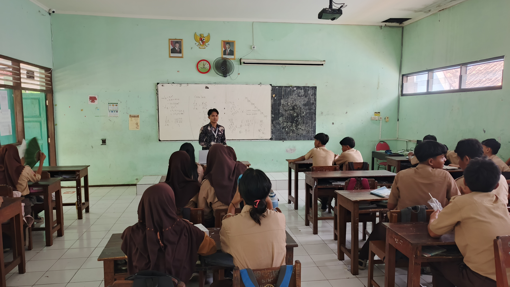
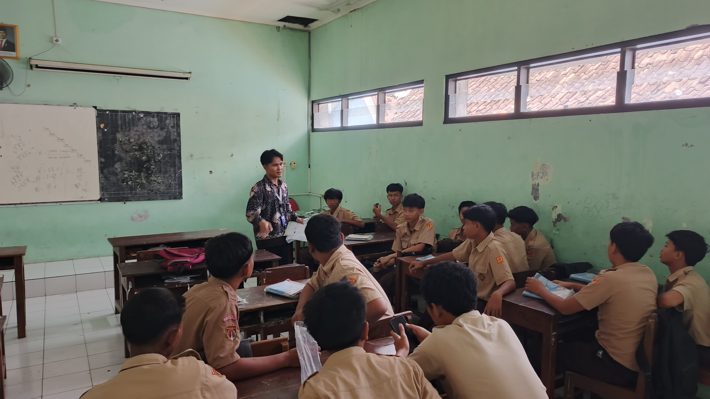
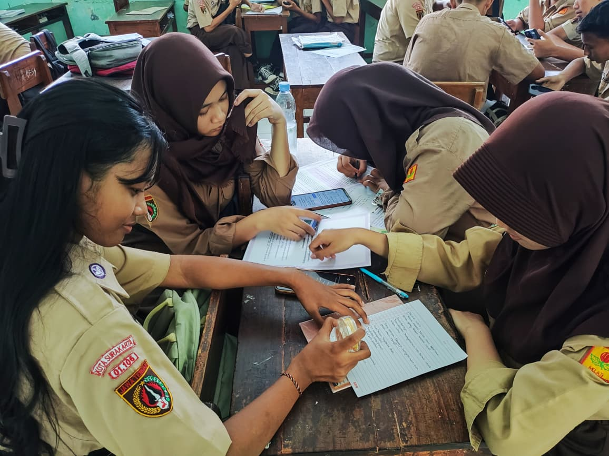

Materi Mengkaji Kritis Informasi: HOAKS (Fase D)
Modul ajar ini dirancang untuk kelas VII dengan alokasi 2 JP. Bertujuan memandu peserta didik mengidentifikasi hoaks, mempraktikkan cara cek fakta melalui sumber resmi (BMKG, Kominfo, CekFakta), dan memproduksi karya kreatif (poster) sebagai kampanye literasi digital.
Modul ini mengadopsi Project-Based Learning (PjBL) secara hibrida. Berdasarkan teori Experiential Learning (Kolb), siswa tidak hanya mengamati teori hoaks, tetapi langsung merefleksikan dan melakukan aksi konkret (merancang poster edukasi).
Pemilihan penilaian sumatif berupa desain poster digital di Canva selaras dengan kerangka kecakapan abad 21 (4C), khususnya pada aspek Creativity dan Critical Thinking dalam menyusun pesan penangkal hoaks.
Presentasi Visual Identifikasi & Cek Fakta
Media presentasi ini (13 slide) digunakan untuk memberikan stimulasi visual kepada siswa. Menampilkan antarmuka screenshot grup obrolan (pesan berantai), ciri-ciri hoaks, hingga pengenalan platform cek fakta agar siswa memahami materi secara kontekstual.
Penyusunan media visual ini didasarkan pada Teori Kognitif Pembelajaran Multimedia (Richard Mayer), khususnya Signaling Principle (Prinsip Sinyal).
Elemen penting seperti "Ciri-ciri Hoaks" dan "Langkah Cek Fakta" disorot menggunakan ikon tebal dan tata letak terstruktur. Ini membantu mengarahkan atensi siswa pada materi esensial tanpa membebani memori kerja kognitif mereka.
Studi Kasus Budi & Proyek Desain Edukasi
LKPD terbagi menjadi dua kegiatan: Analisis Kasus (Budi dan hoaks banjir bandang) serta pengumpulan Proyek Pembuatan Poster. Dilengkapi dengan fitur pemindai QR Code untuk mengunggah tugas kelompok secara *paperless*.
Aktivitas dalam LKPD ini dapat ditinjau melalui lensa Teori Konektivisme (George Siemens). Konektivisme menyatakan bahwa pengetahuan didistribusikan melintasi jaringan dan pembelajaran terdiri dari kemampuan untuk membangun & melintasi jaringan tersebut.
Saat siswa diminta menyebutkan "sumber resmi" (seperti BMKG atau portal anti-hoaks), mereka sedang dilatih untuk terhubung ke simpul informasi (*nodes*) yang valid di luar batas ruang kelas fisik mereka.


